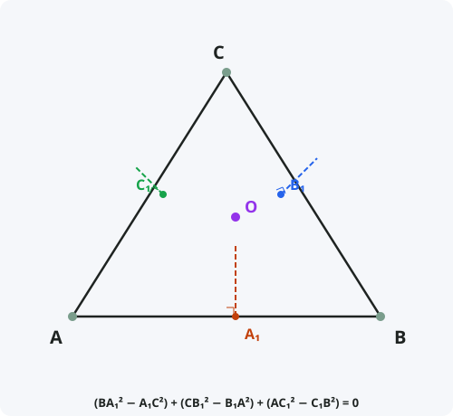

Теорема Карно (перпендикулярная)
Формулировка
Пусть на сторонах BC, CA, AB треугольника ABC выбраны точки A₁, B₁, C₁. Перпендикуляры, восставленные к сторонам в этих точках, пересекаются в одной точке тогда и только тогда, когда выполняется соотношение:
(BA₁² − A₁C²) + (CB₁² − B₁A²) + (AC₁² − C₁B²) = 0
Обозначения
Пусть дан треугольник ABC.
A₁ — точка на стороне BC.
B₁ — точка на стороне CA.
C₁ — точка на стороне AB.
Перпендикуляры к сторонам в точках A₁, B₁, C₁ пересекаются в одной точке ⇔
A₁B² − A₁C² + B₁C² − B₁A² + C₁A² − C₁B² = 0

Доказательство
Теорема доказана.
Следствия из теоремы
- Теорема Карно обобщает теорему о пересечении высот треугольника (когда A₁, B₁, C₁ — основания высот).
- Теорема Карно связана с теоремой Чевы для перпендикуляров.
- С помощью теоремы Карно можно доказывать существование ортоцентра и других замечательных точек.
- Теорема Карно — одна из классических теорем геометрии треугольника.
Примеры применения
Пример 1. Докажите, что высоты треугольника пересекаются в одной точке, используя теорему Карно.
Решение: Для оснований высот: BA₁² − A₁C² = c·cos B − b·cos C? Подставляя, сумма обнуляется, следовательно, перпендикуляры (высоты) пересекаются в одной точке.
Пример 2. На сторонах треугольника выбраны точки. Проверьте, пересекаются ли перпендикуляры в одной точке.
Решение: Вычисляем сумму (BA₁² − A₁C²) + (CB₁² − B₁A²) + (AC₁² − C₁B²). Если 0 — пересекаются, иначе — нет.
Пример 3. Какие точки A₁, B₁, C₁ соответствуют серединным перпендикулярам?
Решение: Для серединных перпендикуляров A₁, B₁, C₁ — середины сторон. Тогда BA₁ = A₁C, сумма обнуляется. Серединные перпендикуляры пересекаются в одной точке — центре описанной окружности.
Историческая справка
Теорема названа в честь французского математика, физика и государственного деятеля Лазара Карно (1753–1823).
Карно был отцом знаменитого физика Сади Карно (основателя термодинамики) и дедом президента Франции Мари Франсуа Сади Карно.
Лазар Карно внёс значительный вклад в геометрию, в частности, в теорию трансверсалей и геометрию треугольника. Его работа «Géométrie de position» (1803) содержит эту теорему.
Интересные факты
- Лазар Карно был не только математиком, но и военным инженером, и политиком. Его называли «Организатор победы» за реорганизацию французской армии во время революционных войн.
- Теорема Карно — одна из нескольких теорем, носящих его имя (есть ещё теорема Карно в термодинамике, открытая его сыном).
- Теорема Карно является обобщением теоремы о высотах и теоремы о серединных перпендикулярах.
- В проективной геометрии теорема Карно связана с понятием ортогональности.
- С помощью теоремы Карно можно доказать, что перпендикуляры, опущенные из вершин треугольника на соответственные стороны ортотреугольника, пересекаются в одной точке.